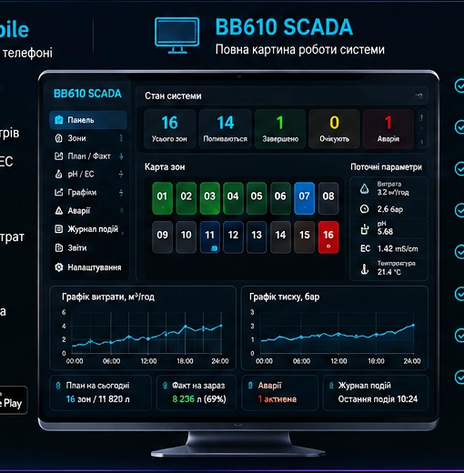

BB610 WATER
Підібрати конфігураціюКОНТРОЛЬ ФАКТИЧНОГО РЕЗУЛЬТАТУ
Полив, результат якого система перевіряє.
BB610 WATER виконує заданий полив і контролює фактичний результат як одна координована система.
ЗАДАНО
800 л
800 л
→
ФАКТИЧНО
802 л
802 л
→
СТАТУС
ВИКОНАНО
ВИКОНАНО
Пояснювальний приклад, не live-дані.
SYSTEM PATH / ACTUAL RESULT
Задав → виконав → виміряв → перевірив
01 · ЗАВДАННЯ
Об’єм або час.
02 · ВИКОНАННЯ
Конкретна зона / цикл.
03 · ВИМІРЮВАННЯ
Фактична витрата та об’єм.
04 · ПЕРЕВІРКА
Виконано або відхилення.
BB610 WATER / OPERATOR LAYERBB610 PULS

Реальний repository asset. Якщо для конкретної тези потрібен інший state: ASSET/PROOF NEEDED.
COMPLETE WATER ARCHITECTURE
Одна система з чіткими внутрішніми шарами
BB610 WATER
PHYSICAL PROCESS
CONTROLHYDRAULICZONE
OPERATOR / CONTROL
BB610 PULSBB610 PULS MOBILE
ANALYSIS
BB610 INTELLIGENCE
CONFIGURATOR RAIL
Версія + зони = точна конфігурація
VERSION
ZONE
IF1F1-PF1-PEF2F2-PF2-PE
ZONE
Z4(8)Z8(12)Z12(16)